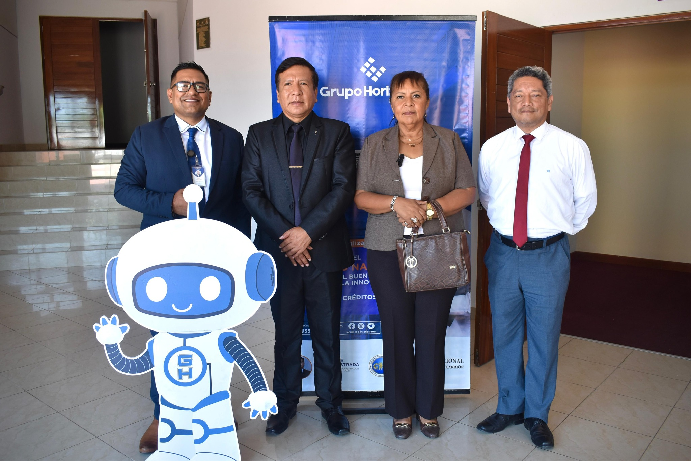
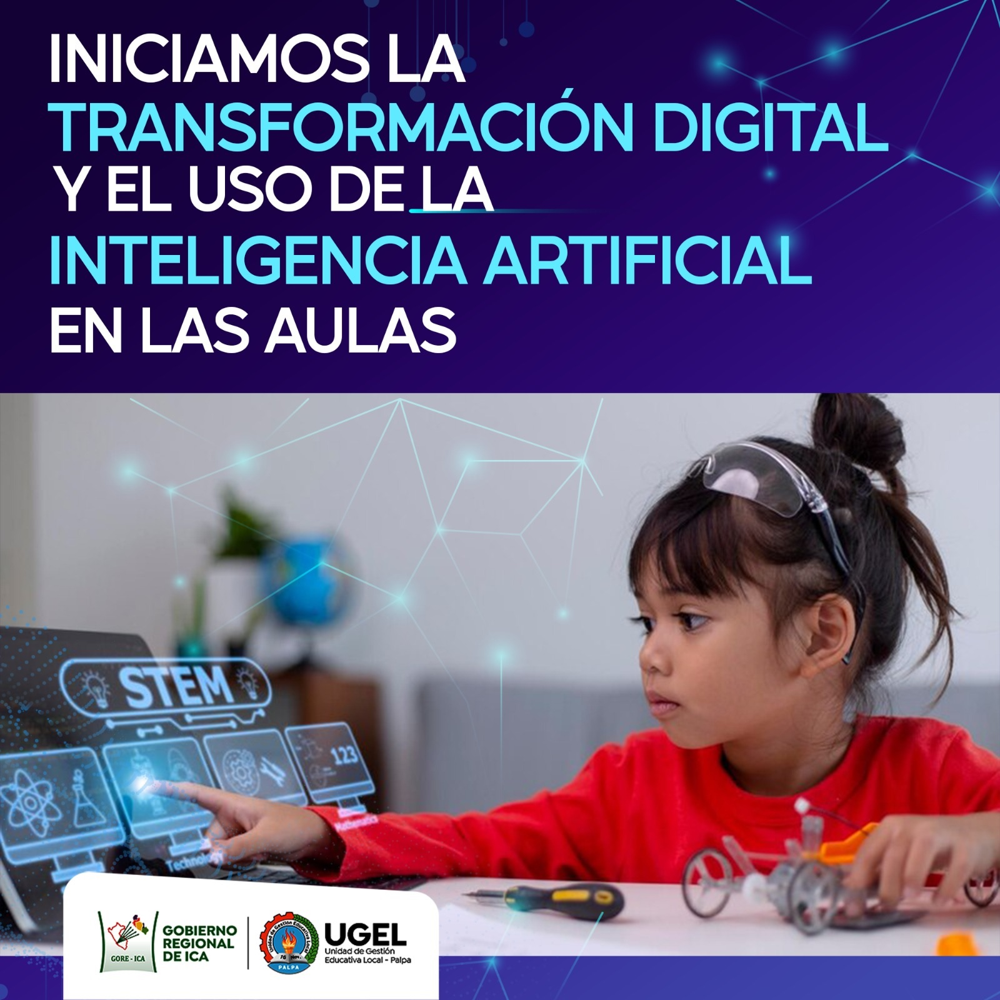

PCM: Invertir en educación y talento en inteligencia artificial garantizará el progreso inclusivo del país
Presidencia del Consejo de Ministros
Leer más

El Callao se convirtió en el epicentro de la educación en Inteligencia Artificial en el país
Dirección Regional de Educación del Callao
Leer más

Transformación Digital - Inteligencia Artificial
Unidad de Gestión Educativa Local de Palpa
Leer más